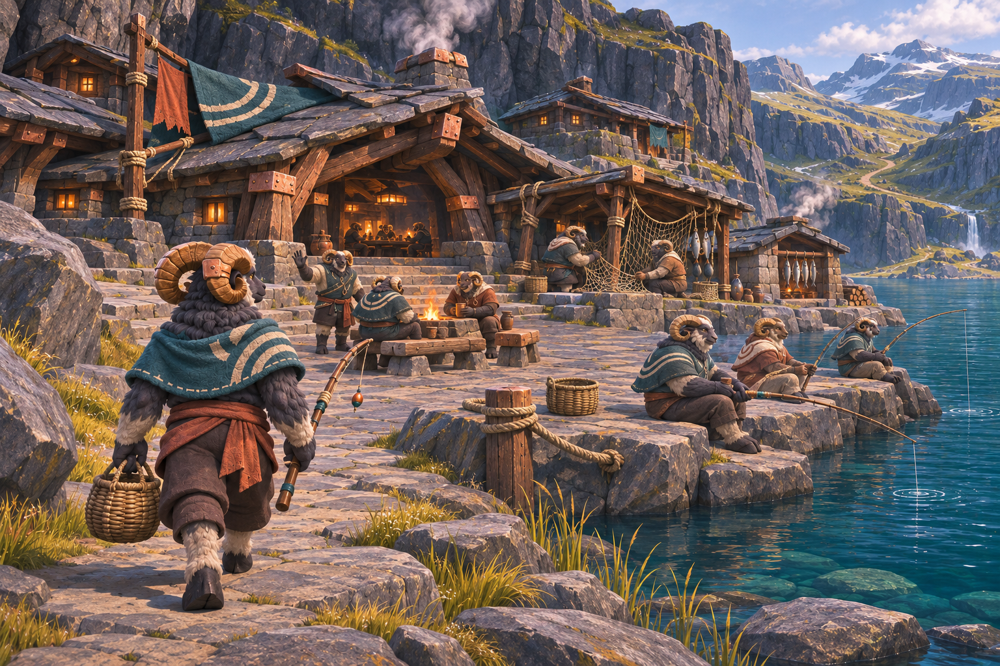

第三方参考
探索起点：湖边的玩家聚集
《魔兽世界》画面，原帖为 Thorgram。关注公共钓点、可见的其他玩家、种族轮廓和聚落生活感。没有完整观看或验证原视频；图中服务器、版本和具体活动未确认。
原帖来源 ↗创作研究 / 探索与效果
EXPLORATION / 01
保留真实的方向变化。被否定的图片也有价值，它们说明哪些东西不能被下一轮悄悄带回来。
两张图构图不同；滑动仅比较美术方向，不表示像素锁定或同一实机场景。


偏差：圆屋、花草和缩小的居民偏向童话村落，与角色的体量不一致。
修正：厚木梁、板岩、粗岩岸、公共作业与成年感居民，从身体和生活需要推导环境。
所有原图都可放大；图像的生成状态和用户反馈始终随图保留。
《魔兽世界》画面，原帖为 Thorgram。关注公共钓点、可见的其他玩家、种族轮廓和聚落生活感。没有完整观看或验证原视频；图中服务器、版本和具体活动未确认。
原帖来源 ↗用户认为环境让人不想玩，与厚重角色不搭。小圆屋、花草和缩小的居民偏向童话村落。一次带角色图的生成因网络失败，之后文字重试；不能宣称逐像素保持角色身份。
原始提示词与生成记录 ↗以 v1 为编辑目标、角色图为身份与风格参考，重做为厚木梁、板岩、岩岸和成年感居民。用户认可为居住点的一角。前景角色仍偏大，尚未验证真实游戏镜头。
原始提示词与生成记录 ↗时间顺序依本次对话整理；不以网页整理时间冒充每个决定的精确发生时刻。
完整 MMO 的内容与运行规模过大，用户更关心生活和交往。
先提出走动、钓鱼、聊天的奇幻小镇原型；不把首版等同商业 MMO。
早期“修灯、等渡船”的故事过早，环境、人物和游戏方向还未统一。
先探索游戏定位、环境规则、人物身份，再让主线与它们互相约束。
提出高地粗犷、森林童话、东方山水三种候选。
用户选择高地草原、厚重木石建筑、成年冒险者的 A 方向。
世界发展可以成为玩家理解自然、创造技术和社会的过程。
提出观察—试验—制造—协作—传承，并允许玩家设计活动与规则。
唯一穿越者、个人救赎式长篇难以直接群体化。
区分作者控制的世界事实、个人经历、小队章节和公共有限结果。
用户明确指出，步骤与机制不等于完整故事。
把十八年前洪灾、洛恩的动机、渡石的隐瞒、共同试验、长雨与结局串成完整因果。
需要把探索、效果、故事、机制与后期产品统一保存。
本轮创建独立子项目和本地静态网页；不自动公开发布。
保留方案的价值，同时记下为什么没有直接定稿。
修复码头小灯、调查灯塔熄灭、迎回渡船，以生活与关系进入故事。
寻找失踪商队，追查呼唤各部落回家的古城；面对停留于过去或继续生活的诱惑。
不同聚落自由选择发展路径，玩家行为生成历史。
通过洪灾、技术传播、图纸与权力、共同试验和长雨，讲述一个能够学习和修正自己的社会。